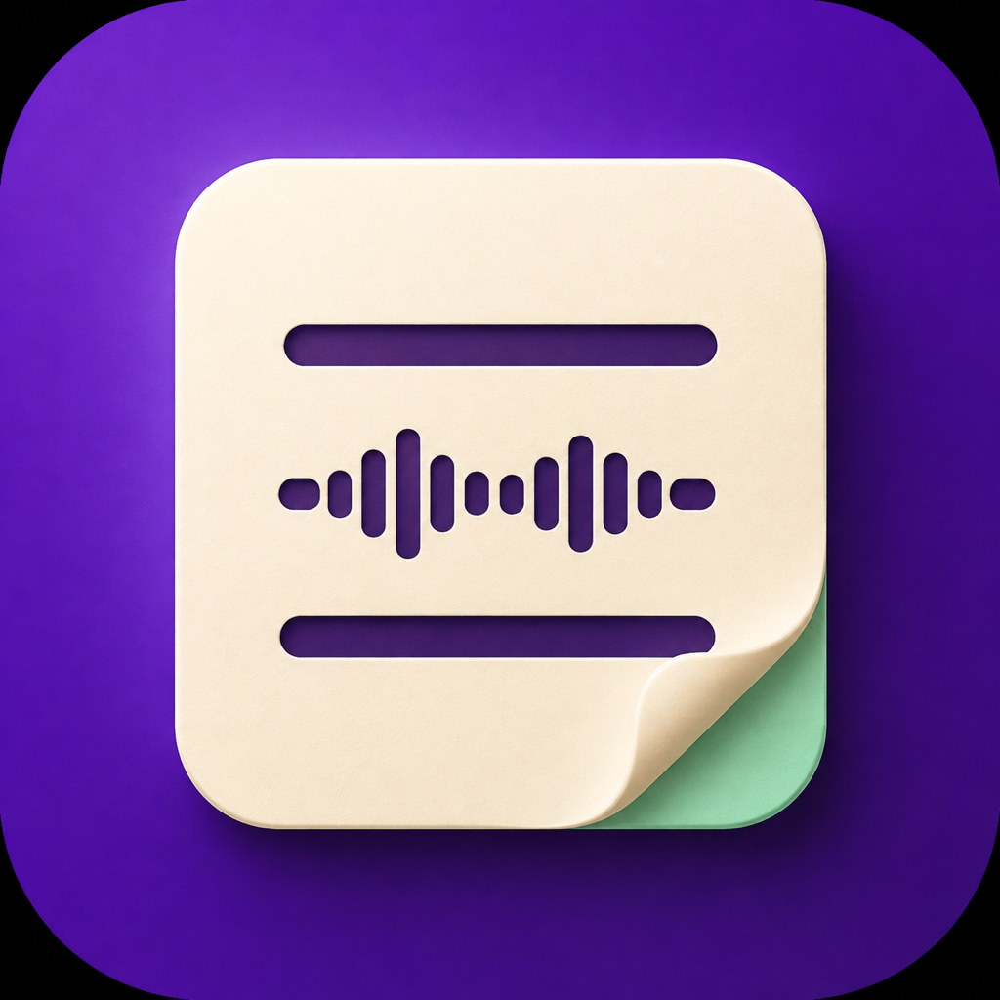
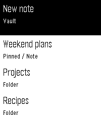
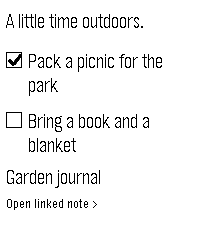
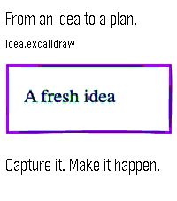

Say it. Save it.
Pebble limits recordings to 15 seconds. Quick Dictate is for one short thought; Stitch joins multiple recordings for a longer note. Use either to create or append; each accepted section is saved before continuing.
Catch a thought before it disappears. Read a note, check a task, or speak a search. Your everyday Obsidian, a button press away.
Free. MIT open source. No Notesy account or subscription.

Pebble limits recordings to 15 seconds. Quick Dictate is for one short thought; Stitch joins multiple recordings for a longer note. Use either to create or append; each accepted section is saved before continuing.
Browse folders and root notes. Pin your go-to notes, hide folders, or dictate a fuzzy search to find a likely match.
Check Markdown tasks, view local pictures and Excalidraw previews, and make the buttons and typography your own.
Real emulator screenshots with fictional notes. Folders load more as you scroll; long paragraphs stay readable.



Notesy reads your local vault through a private Tailscale connection. Keep your Mac awake and the connector running. No Obsidian plugin required.
You'll need macOS 14+, a paired Pebble Time or Time 2, and Tailscale on Mac and phone. iPhone is the tested setup. Voice uses your phone's configured dictation provider.
Images are local, scaled previews. Remote images, PDFs and plugin-generated views aren't supported. Read the full guide →
Thank you to the developers and communities behind Pebble, Rebble, Obsidian, Excalidraw, Tailscale, and all the libraries, fonts and tools that make Notesy possible.
Thank you to ChatGPT and Codex, especially ChatGPT 5.6 Sol and ChatGPT 6 Astra, and to the people at OpenAI who build these tools, for allowing a nerd with an idea to make cool stuff.